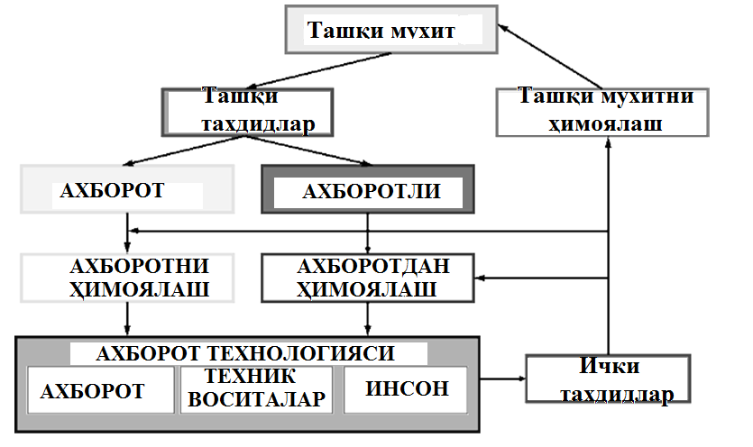

Mavzu: Kiber-huquq va kiber-etika fanining maqsadi va vazifalari.
Reja:
Kiber-huquq va kiber-etika tushunchasi va mohiyati
Kiber-huquq va kiber-etikani tashkil etuvchilari va harakteristikalari
Kiber-huquq va kiber-etika muammosining murakkabligi va muhimligi
Kiberhuquq va kiberetika fanining maqsadi axborot xavfsizligini taʼminlash sohasidagi meʼyoriy, nazariy va amaliy izlanishlar natijalari bilan tanishtirish. Аxborot tizimlarini, resurslarni himoyalangan texnologiya asosida qurish, himoyalanadigan axborotga nisbatan boʼladigan taxdidlarga zamonaviy yondashuvga asoslangan holda tahlil qilishga doir bilimlar va uquvlar hosil qilishga asos tayyorlaydi hamda mutaxassislik fanlarini muvaffaqiyatli oʼrganish uchun zarur boʼlgan kasbga doir tushunchalar, taʼriflar, iboralar, meʼyoriy-huquqiy xujjatlar, qonunlar va standartlarni qoʼllashga oid bilimlarni shakllantiradi.
Kiberhuquq va kiberetika deganda tabiiy yoki sunʼiy xarakterdagi tasodifiy yoki qasddan qilingan taʼsirlardan axborot va uni qoʼllab-quvvatlab turuvchi infratuzilmaning himoyalanganligi tushuniladi. Odatda taxdid deganda (umumiy maʼnoda) kimningdir manfaatlariga zarar yetkazuvchi hodisa (taʼsir, jarayon yoki voqea) tushuniladi. Аxborot tizimiga taxdid deganda esa axborot tizimining xavfsizligiga bevosita yoki bilvosita zarar yetkazuvchi taʼsir imkoni tushuniladi.

Zamonaviy jamiyat tobora ko'proq konfidensial ma'lumotlardan foydalanmoqda. U yoki bu shakldagi konfidensial axborot iqtisodiyotning barcha sohalarida faoliyatning asosiga aylandi. Shu bilan birga, axborot har xil turdagi huquqbuzarliklarning ob'ekti ham hisoblanadi. Bundan konfidensial axborot to'g'risidagi qonun hujjatlarining kontseptual apparatini, shuningdek, uni himoya qilish asoslarini o'rganish zaruriyati kelib chiqadi. Shu munosabat bilan, axborotni qidirish, olish, uzatish, ishlab chiqarish va tarqatish huquqini amalga oshirish bilan bog'liq munosabatlarni tartibga soluvchi asosiy qonun hujjatlari axborot texnologiyalaridan foydalangan holda, axborot himoyasini ta'minlashda 11.12.2003 yildagi 560-II-son “axborotlashtirish to‘g‘risida”gi qonunidir. Konfidensial axborot - bu taqdim etish shaklidan qat'i nazar ma'lumotlar va xabarlar shaklida bo’lishi mumkin. Axborotdan foydalaniladigan munosabatlar turiga ko'ra uni quyidagilarga bo'lish mumkin:
ommaviy huquqiy munosabatlar ob'ekti;
fuqarolik-huquqiy munosabatlar ob'ekti;
boshqa huquqiy munosabatlar ob'ekti.
Unga kirish toifasiga qarab ma'lumotlar quyidagilarga bo'linadi:
kirishi cheklangan ma'lumotlar (ular o'z navbatida davlat siri shaklida mavjud bo'lgan ma'lumotlarga va konfidensial ma'lumotlar ko'rinishidagi ma'lumotlarga bo'linadi);
ochiq (ommaviy) axborot.
Shuni ta'kidlash kerakki, axborotni idrok etuvchi sub'ektning majburiy mavjudligini nazarda tutuvchi yondashuvga asoslanib, butunlay yopiq ma'lumotlar mavjud emas, chunki bu hech kimga noma'lum ma'lumotlar mavjudligini anglatadi. Ochiq ma'lumotlarga quyidagilar kiradi: barcha huquqiy bo'lmagan ma'lumotlar, shuningdek saylovlar va referendum natijalari to'g'risidagi ma'lumotlar; rasmiy hujjatlar, majburiy tarqatilgan axborotlar. "Davlat sirlari to'g'risida" gi axborot davlat sirini tashkil etuvchi ma'lumotlar ro'yxatini belgilaydi. Konfidensial xarakterga ega ma'lumotlarga quyidagilar kiradi:
fuqaroning shaxsiy hayotining faktlari, hodisalari va holatlari to'g'risidagi ma'lumotlar, uning shaxsini aniqlashga imkon beruvchi (shaxsiy ma'lumotlar), hukumat qonunlarida belgilangan hollarda ommaviy axborot vositalarida tarqatilishi kerak bo'lgan ma'lumotlar bundan mustasno. Bunda fuqarolik holati dalolatnomalarini davlat ro‘yxatidan o‘tkazish munosabati bilan fuqarolik holati dalolatnomalarini yozish organi xodimiga ma’lum bo‘lgan ma’lumotlar shaxsiy ma’lumotlar hisoblanadi;
tergov va sud jarayonining sirini tashkil etuvchi ma'lumotlar, shuningdek himoya qilinadigan shaxslar to'g'risidagi ma'lumotlar. "Jinoyat protsessining boshqa ishtirokchilari" va O’zbekiston Respublikasi boshqa normativ-huquqiy hujjatlari bilan himoya qilinadigan shaxslar to’g’risidagi ma’lumotlar;
O’zbekiston Respublikasi Fuqarolik Kodeksiga va davlat qonunlariga muvofiq kirish davlat organlari tomonidan cheklangan rasmiy ma'lumotlar (rasmiy sir);
O’zbekiston Respublikasi Konstitutsiyasi va davlat qonunlariga muvofiq kirish cheklangan kasbiy faoliyat bilan bog'liq ma'lumotlar (tibbiy, notarial, advokat sirlari, yozishmalar, telefon suhbatlari, pochta, telegraf yoki boshqa xabarlar va boshqalar);
O’zbekiston Respublikasi Fuqarolik Kodeksiga va davlat qonunlariga muvofiq kirish cheklangan tijorat faoliyati bilan bog'liq ma'lumotlar (tijorat siri);
ixtiro, foydali model yoki sanoat namunasining mohiyati to'g'risidagi ma'lumotlar ular to'g'risidagi ma'lumotlar rasmiy e'lon qilinishidan oldin.
Cheklangan kirishga ega ma'lumotlar ikkita xususiyat bilan belgilanadi:
qonun hujjatlariga muvofiq foydalanish imkoniyati cheklangan;
cheklashning maqsadi konstitutsiyaviy tuzum asoslarini, boshqa shaxslarning axloqi, salomatligi, huquqlari va qonuniy manfaatlarini himoya qilish, mamlakat mudofaasi va davlat xavfsizligini ta'minlashdir.
Axborotni himoya qilish belgilari:
faqat hujjatlashtirilgan ma'lumotlar himoya qilinishi kerak;
axborot qonun hujjatlarida belgilangan cheklovlarga mos kelishi kerak;
axborotni himoya qilish qonun bilan belgilanadi.
Ta'minlash yoki tarqatish tartibiga ko'ra ma'lumotlar quyidagilarga bo'linadi:
ma'lumotlarning erkin tarqatilishi;
tegishli munosabatlarga aloqador shaxslarning kelishuvi bilan taqdim etilgan ma'lumotlar;
davlat qonunlariga muvofiq taqdim etilishi yoki tarqatilishi kerak bo'lgan ma'lumotlar;
O’zbekiston Respublikasida tarqalishi cheklangan yoki taqiqlangan ma'lumotlar.
Tijorat korxonalar konfidensial ma'lumotlarsiz ishlay olmaydi. Konfidensial ma'lumotlar to'g'risidagi qonun sanoat, tijorat, hukumat, ish joyi, bandlik va shaxsiy kontekstlarda qo'llaniladi.Bundan tashqari konfidensial ma’lumotlar:
konfidensial ma'lumotlar va axborotlarni qanday ko‘rinishda yozib olinganidan qat'i nazar, uning barcha shakllarida himoya qiladi;
intellektual mulkning boshqa himoya shakllari uni himoya qilish uchun paydo bo'lishidan oldin yoki hech qachon ishlab chiqilmagan holatda;
ma’lumotlar fizik ko’rinishga o’tmagan holatda ham ulani himoya qiladi.
Konfidensial ma'lumotlar nima? Konfidensiallik (ruxsatsiz o‘qishning mumkin emasligi) xususiyati axborotning ruxsat etilmagan foydalanuvchilardan yashirish, ma’lumot ma’nosini tushunib olmaslik uchun, uni tushunarsiz holatda o‘tkazish kabi vazifalarni bajarish orqali bajariladi.Konfidensial axborotni himoya qilishning asosiy maqsadi shundan iboratki, konfidensial axborotni oluvchilarga undan nohaq foydalanishlariga yo'l qo'yilmaydi.
Konfidensial tijorat ma'lumotlari quyidagi ma'lumotlardir:
Konfidensial tijorat ma'lumotlari umumiy va jamoat mulki emas (bu konfidensiallikka qarama-qarshi belgilardir);
Konfidensial tijorat ma'lumotlari ahamiyatsiz yoki keraksiz ma'lumotlar emas. Bu qandaydir ahamiyatga ega yoki qiymatga ega bo'lgan ma’lumotlardir.
Oddiy ma'lumot esa:
tijorat, moliyaviy yoki pul qiymatini talab qilmaydi;
juda noaniq bo'lmasligi kerak. U yetarlicha darajada real bo'lishi va "haqiqat sifatida amalga oshirilishi mumkin" bo'lishi kerak.
agar u oshkor qilingan bo'lsa, egasiga zarar yetkazishi yoki raqobatdosh korxonalar uchun foydali bo'lishi mumkin.
Konfidensial ma'lumotlarning turlari. Konfidensial deb hisoblanadigan ma'lumotlarning yaxshi o'rnatilgan toifalari mavjud, shu bilan birga ular konfidensial ma'lumot sifatini saqlaydi. Barcha turdagi biznes ma'lumotlarini konfidensial ma'lumotlar sifatida tasniflash mumkin, masalan:
Moliyaviy ma'lumotlar:
moliyaviy prognozlar;
narx-navoga oid ma'lumotlar, operatsion nisbatlar, kapital ko'rsatkichlari, xarajatlar;
qo'shma korxonadagi aktivlar uchun to'lanadigan narx.
Biznes ma'lumotlari:
biznes-rejalar va strategiyalar;
boshqaruv ma'lumotlari va boshqaruv hisoblari;
sotib olish xarajatlari;
o'rtacha foyda ko'rsatkichlari va sof zarar ko'rsatkichlari;
strategik ma'lumotlar, mijozlar va xodimlar bilan bog'liq ma'lumotlar;
yuqori darajada moslashtirilgan siyosat va protseduralar.
Mijoz haqida ma'lumot:
mijozlar ro'yxati;
ularning sotib olish afzalliklari;
foyda marjasi va olinadigan narxlar;
mahsulot yoki xizmatlarni sotish hajmi.
Axborot texnologiyalari:
dasturiy ta'minot va ma'lumotlar bazalari;
algoritmlar, konfidensial formulalar, texnik jarayonlar;
tijorat sirlari.
Ishlab chiqarish:
muhandislik chizmalari;
ma'lumotlar diagrammalari.
Tadqiqot va ishlanmalar:
Prototiplar;
mahsulotni sinovdan o'tkazish natijalari;
klinik tadqiqot.
Ko'pincha, oshkor etilishidan himoyalangan ma'lumotlar bir vaqtning o'zida boshqa intellektual mulk huquqlari bilan himoyalangan bo’ladi. Masalan, ma'lumotlar yozma shaklda yoki elektron shaklda qayd etilishi mumkin. Aytaylik, unda konfidensial ma'lumotlar mavjud. Hujjatda ko'rsatilgan so'zlar mualliflik huquqi, shuningdek, konfidensial ma'lumotlar to'g'risidagi qonun bilan himoyalanmagan bo’lsada ma'lumotlar konfidensialligicha qolar ekan.
Konfidensiallik majburiyati. Konfidensiallik majburiyati uchun qat'iy shablon mavjud emas. Buyuk Britaniyada konfidensiallik huquqi mulkiy yoki mulkiy huquq emas. Bu qonun konfidensial munosabatlarni buzgan holda javobgarlikning boshqa shaxsga o'tkazilishining oldini olish huquqidir.
Konfidensial ma'lumotlarni almashish. Jamoatchilikning ayrim a'zolari ma'lumotni bilishi mumkinligi ma'lumotlarning konfidensialligini buzmaydi. Demak, agar ma'lumot cheklangan miqdordagi jamoatchilikka ma'lum bo'lsa, bu ma'lumotlarning konfidensialligini buzmaydi. Ma'lumotlarning konfidensialligi ma'lumotlar jamoat mulkiga tushmaguncha va shu tariqa ommaviy ma'lumotga aylanmaguncha saqlanadi. Kompaniya konfidensial ma'lumotlarining oshkor etilishi konfidensiallikni buzadimi yoki yo'qmi, bu daraja masalasidir.
Nisbiy konfidensiallik. Ko'pincha konfidensial ma'lumotlarni biladigan odamlarning doirasisida bir nechta odam mavjud bo’ladi. Cheklangan taqsimotga ega nozik ma'lumotlar o'zining konfidensialligini saqlab qoladi.
Nazorat savollari:
1. Huquq tushunchasiga ta’rif bering.
2. «Axborotlashtirish» atamasi nimani anglatadi.
3. Axborotning huquqiy muhofazasi qaysi elementlardan quriladi.
4. Standartlarning turlari.
5. Kompyuter vositalari va yangi axborot texnologiyalaridan foydalangan holda sodir etilgan jinoyatlarning o'sish omillari.